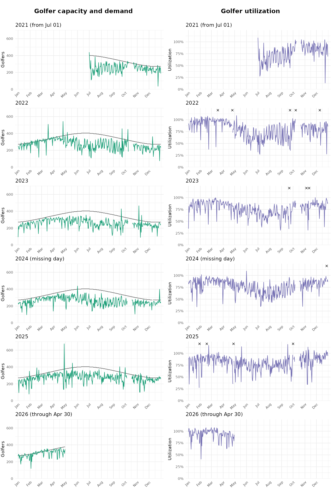
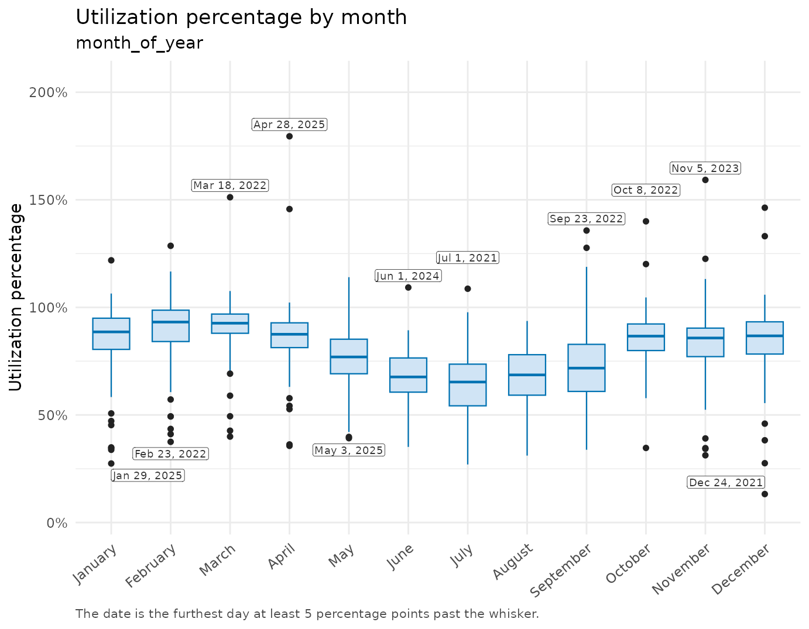

library(golfops)
sample <- dobson_operating_daily()
open <- sample[sample$rounds_played > 0, ]
october_zero <- sample$date[sample$flag_zero_rounds & sample$month == "October"]
other_zero <- sample$date[sample$flag_zero_rounds & sample$month != "October"]
other_zero_note <- if (length(other_zero) == 0) {
"Every zero-round day in this sample falls in October."
} else {
paste0(
"The other zero-round ",
if (length(other_zero) == 1) "day is " else "days are ",
paste(format(other_zero, "%Y-%m-%d"), collapse = ", "),
". Nobody played, so ",
if (length(other_zero) == 1) "that day is " else "those days are ",
"left off the utilization line too."
)
}Utilization can be counted in golfers or in golf slots. A golf slot
is one tee time. One to four golfers can occupy it, and the slot is
still used once. This extract records golfers, not the groups they
formed, so the charts count golfers. A tee sheet would make a golf-slot
count worth adding. course_capacity() can count tee times
from an opening time, a closing time, and an interval.
daily_utilization() can compare groups on a sheet with
those starts. Neither input is in this extract.
A round here is one golfer. Gray is the city’s daylight estimate of how many golfers could play between sunrise and sunset. Green is golfers who played. Purple is those golfers divided by the estimate. The utilization axis runs from 0 to 120 percent, and a cross marks a day above 120 percent. A day with no play is left off that line.
The operating sample has five Octobers, 2021 through 2025. Each has
11 consecutive zero-round days, 55 days in all, from October 11–21 in
2021 to October 6–16 in 2025, starting one day earlier each year. The
city file does not say the course was closed. Those days stay out of the
utilization line, and rounds_possible is not reduced. The
other zero-round day is 2022-11-12. Nobody played, so that day is left
off the utilization line too. The daily calendar for these years is in
Heatmap: Month and Days.
Golfers
plot_capacity_demand(
sample,
unit = "golfers",
panels = c("capacity", "utilization")
)
By month and weekday
The box is the middle half of days with play. The line is the median day. A dot is a day at least five percentage points past the whisker, and the date names the furthest of those days. June through August are the low months. February and March are the high months. Monday through Wednesday sit a little below Thursday through Sunday. April has the most golfers on a played day. A summer day can match a winter day in golfers while the daylight estimate is longer, so its utilization percentage is lower.
plot_daylight_share(open, "month_of_year") +
ggplot2::labs(
title = "Utilization percentage by month",
y = "Utilization percentage"
) +
ggplot2::theme(
plot.background = ggplot2::element_rect(fill = "white", colour = NA)
)
plot_daylight_share(open, "weekday") +
ggplot2::labs(
title = "Utilization percentage by weekday",
y = "Utilization percentage"
) +
ggplot2::theme(
plot.background = ggplot2::element_rect(fill = "white", colour = NA)
)